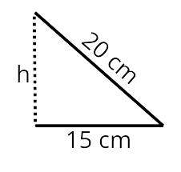

Triangles / Triángulos
Triangles are common in acoustic panel installations. Visit this link.
The area is base times height divided by two:
Area of this equilateral triangle = ( 45 · 39 ) / 2 = 877,5 cm²
The perimeter is the sum of the three sides:
Perimeter of this equilateral triangle P = 45 + 45 + 45 = 3 · 45 = 135 cm
Regular Polygon / Polígonos regulares
Regular polygon are common in acoustic panel installations. Visit this link.
The area of a regular polygon is perimeter times apothem (ap), divided by two.
The perimeter is the sum of the sides or one side times the number of sides.
Let’s calculate the area of a panel shaped like a regular pentagon:_(1).png)
The radius is 32 cm, and the side is 38 cm.
To find the perimeter: P = 38 · 5 = 190 cm.
To find the area, use the formula A = (P · ap) / 2.
First, calculate the apothem. We use the Pythagorean theorem.
The hypotenuse is the radius, and the legs are the apothem and half the side.
32² = ap² + (38/2)² → 1024 = ap² + 361 → ap² = 663 → ap ≈ 26 cm
Area: A = (190 · 26) / 2 = 2470 cm²
Non-regular Polygon / Polígonos irregulares
You can use non-regular polygon in acoustic panel installations. Visit this link.
For a non-regular polygon with more than 4 sides, break it into simple shapes (triangles or quadrilaterals) to find the area.
The perimeter is the sum of all sides.
For example, to find the area and perimeter of this panel:
Divide the shape into a triangle and a square.
Total area = area of the square + area of the triangle.
The triangle height (h) is found with the Pythagorean theorem.
202 = h2 + 152 → 400 = h2 + 125 → h2 = 400 - 125 = 275 → h ≈ 16 cm
Total area = (30 · 30) + (15 · 16)/2 = 900 + 120 = 1020 cm2
And the perimeter is: 30 + 30 + 30 + 20 + 20 = 130 cm


 Now, calculate the areas and perimeters of the polygons for your panels area.
Now, calculate the areas and perimeters of the polygons for your panels area.